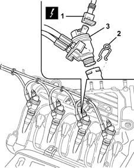
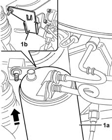
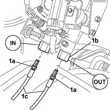
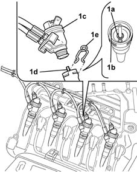

1057B66 gpl injector unit with connection pipes to pressure regulator r r
- Path
- Procedures > 10 ENGINE UNIT > 1057 LPG FUEL SYSTEM. > 1057B gpl multipoint injection fuel system > 1057B66 gpl injector unit with connection pipes to pressure regulator r r
- Kind
- repair procedure (removal / refitting; the operation number is the code)
- Applies to
- engines: 1.6 16v; all production periods; only with equipment: GPOWER
- Interactive page
- https://sloeber94.github.io/elrnDB-fMltpl/en/#/2891514
Applies to: engines: 1.6 16v; all production periods; only with equipment: GPOWER and Euro 3
 Removing
Removing
 Refitting
RefittingDrain the LPG delivery and return lines from the tank to the pressure reglator. Follow the correct procedure and observe the regulations shown 1043A02 lpg system lines pipe draining operations .
Disconnect the battery negative terminal.
1. Disconnect the injector electrical connector.
 | Name | Connector |
|---|---|---|
1 | GPL injector |
Release the electrical wiring from the securing bands.
2. Withdraw the injector retaining clip.
3. Withdraw the injector from its seat on the intake manifold.

Applies to: engines: 1.6 16v; all production periods; only with equipment: GPOWER and Euro 3
1. Lift out the activated carbon filter (1a) to release from its bracket (1b).
Place the activated carbon filter aside to make the LPG pipes on the pressure regulator accessible.

Applies to: engines: 1.6 16v; all production periods; only with equipment: GPOWER and Euro 3
1. Undo connectors (1a) securing connectors (1b), then disconnect the LPG delivery and return pipes (1c) to the injectors.

Applies to: engines: 1.6 16v; all production periods; only with equipment: GPOWER and Euro 3
Take the injectors and pipes to the bench.
Applies to: engines: 1.6 16v; all production periods; only with equipment: GPOWER and Euro 3
Refitting
RemovingFit the LPG delivery and return pipes to the injectors and tighten the fittings to torque.
 | Fastening | Component | Ø | Value (daNm) |
|---|---|---|---|---|
- | Connector | INJECTOR LPG SUPPLY PIPE./. | - | 1.4 |
| Fastening | Component | Ø | Value (daNm) |
|---|---|---|---|---|
- | Connector | INJECTOR REGULATOR LPG RETURN PIPE../ | - | 1.4 |
Fit the activated carbon filter to its bracket.
1. Check that sealing rings (1a) and (1b) are correctly positioned, then fit injector (1c) into its seat by inserting in spray (1d). Avoid bending; secure the injector with the retaining clip (1e).

Applies to: engines: 1.6 16v; all production periods; only with equipment: GPOWER and Euro 3
Connect the injector electrical connector.
| Name | Connector |
|---|---|---|
- | GPL injector |
Carry out the same operations for the remaining injectors.
Secure the electrical wiring to the retaining bands.
1043A04 gpl system and pipes check for leaks .
Connect the battery negative terminal.
Topics linked from this page (3)
- 1043A02 lpg system lines pipe draining operations
- 1043A04 gpl system and pipes check for leaks
- N73 GPL injector